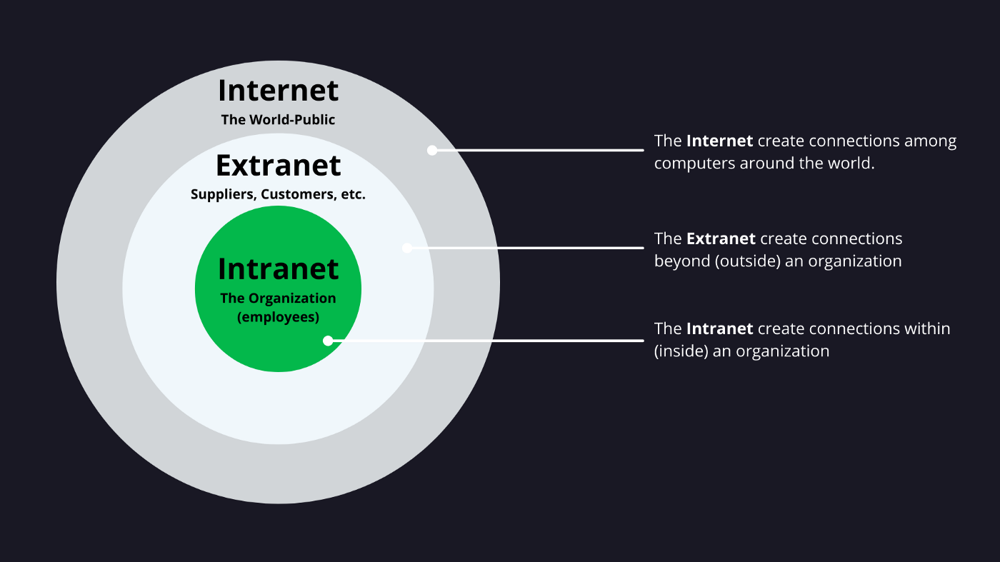

An Intranet is a private internal network used by a single organization to share information and resources securely among employees.
An Extranet is a controlled extension of that private network that allows authorized outsiders, such as partners or vendors, to access specific parts of the data.
Their primary role is to provide layers of security for collaboration both within and just outside a company.
